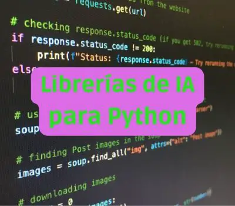

Python
¿Que es Python?
Python es un lenguaje de programación de alto nivel,
interpretado y de propósito general.
 Destaca por su sintaxis clara y legible, lo que facilita el aprendizaje
y la expresión de conceptos. Es conocido por su versatilidad y amplia comunidad de desarrolladores. Python
se utiliza en diversos campos, desde desarrollo web y científico hasta automatización de tareas y aprendizaje
automático. Su filosofía hace hincapié en la legibilidad del código y en la idea de que "debería haber una, y
preferiblemente solo una, manera obvia de hacer las cosas".
¿Que beneficios ofrece Python?
Sintaxis Clara y Legible:
La sintaxis de Python es simple y fácil de leer, lo que facilita la comprensión
del código y acelera el desarrollo. Esto contribuye a una mayor productividad y
facilita el aprendizaje para principiantes.
Versatilidad:Python es un lenguaje de propósito general que se puede utilizar en una variedad
de aplicaciones, desde desarrollo web hasta ciencia de datos, inteligencia artificial,
automatización, scripting, y más. Su versatilidad lo hace adecuado para una amplia gama de proyectos.
Gran Comunidad y Soporte:Python cuenta con una comunidad activa y comprometida de desarrolladores.
Esto significa que hay una abundancia de recursos, bibliotecas y frameworks disponibles. Además, la comunidad ofrece soporte y
contribuciones constantes al desarrollo y mejora del lenguaje.
Bibliotecas y Frameworks Abundantes:Python tiene una amplia variedad de bibliotecas y frameworks que simplifican
el desarrollo de software en diferentes áreas. Ejemplos incluyen Django y Flask para desarrollo web, NumPy y Pandas para análisis de datos,
TensorFlow y PyTorch para aprendizaje profundo, entre muchos otros.
Interpretación y Portabilidad:Python es un lenguaje interpretado, lo que significa que el código
se ejecuta línea por línea en tiempo de ejecución. Esto facilita la experimentación y el desarrollo interactivo. Además,
Python es portátil, lo que permite ejecutar el mismo código en diferentes plataformas sin necesidad de modificarlo.
¿Que Son las librerias de Python?
Python cuenta con una amplia variedad de bibliotecas (también conocidas como módulos o paquetes)
que cubren casi todos los aspectos del desarrollo de software, desde ciencia de datos hasta desarrollo
web. Aquí hay algunas de las bibliotecas más populares en diferentes áreas:
Ciencia de Datos y Análisis Numérico:
NumPy: Biblioteca fundamental para operaciones matriciales y numéricas.
Pandas: Estructuras de datos y herramientas de análisis de datos.
Matplotlib: Biblioteca para crear gráficos estáticos, interactivos y animados.
Aprendizaje Automático y Ciencia de Datos:
Scikit-learn: Herramientas sencillas y eficientes para análisis predictivo de datos.
TensorFlow y PyTorch: Bibliotecas populares para aprendizaje profundo y redes neuronales.
Desarrollo Web:
Django: Marco web de alto nivel y robusto para desarrollo rápido.
Flask: Marco web ligero y fácil de extender.
FastAPI: Marco rápido para crear APIs basadas en estándares de tipo Python 3.7+.
Automatización y Tareas Generales:
Requests: Biblioteca para realizar solicitudes HTTP.
Beautiful Soup: Herramienta para extraer información de páginas web.
Selenium: Automatización de navegadores web.